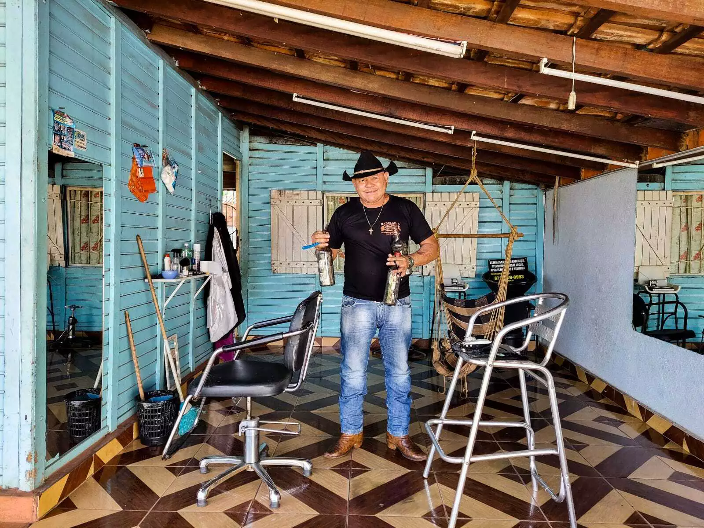

A Barbearia Red Dead Barber é um espaço que transporta os clientes para o ambiente rústico e aventureiro do Velho Oeste, inspirado no icônico jogo Red Dead Redemption 2
Com um design que combina elementos vintage e temáticas cowboy, a barbearia oferece uma experiência única
O que voce encontra aqui?
Os barbeiros, vestidos a caráter, proporcionam cortes de cabelo e estilos de barba que remetem aos personagens e à cultura do jogo
Cortes de cabelo personalizados com o estilo dos seus personagens favoritos
A decoração inclui madeira envelhecida, ferramentas tradicionais e memorabilia do Velho Oeste
criando uma atmosfera acolhedora e nostálgica.
Além dos serviços de barbearia, a Red Dead Barber serve como um ponto de encontro para amantes do jogo e da cultura cowboy
promovendo eventos temáticos e uma comunidade unida pela paixão pela aventura e pelo estilo.
Ofertas Especiais na Barbearia Red Dead Barber
Na Barbearia Red Dead Barber, oferecemos uma variedade de pacotes e descontos especiais para tornar sua experiência ainda mais memorável.
Pacote Cowboy: Inclui corte de cabelo e modelagem da barba, com um preço promocional para quem deseja um look completo.
Dia do Grupo: Reserve para grupos de 4 ou mais e ganhe 15% de desconto em todos os serviços.>
Noite de Estilo: Participe de nossos eventos mensais, onde oferecemos cortes e estilos inspirados em personagens do Red Dead Redemption 2
Promoções Sazonais: Fique atento a promoções durante datas comemorativas, como Dia dos Pais e festas de fim de ano, com pacotes exclusivos.
ENDEREÇO
Rua do Velho Oeste, 123
(87)9879-9872
HORARIO DE FUNCIONAMENTO
Segunda a Sexta: 9h00 - 19h00
Sábado: 10h00 - 18h00
Domingo: Fechado
Formulário para Agendamento de Serviços
Para agendar um serviço, preencha o formulário abaixo:
Nome: [___________]
Telefone: [___________]
Data desejada: [___________]
Hora desejada: [___________]
Tipo de serviço: [Corte de cabelo / Modelagem de barba / Outros]
Dicas de cuidados com o cabelo
Hidratação Regular: Use um bom condicionador e faça hidratações semanais para manter os fios saudáveis.
Corte Regular: Corte o cabelo a cada 6-8 semanas para evitar pontas duplas e manter o estilo.
Uso de Produtos Adequados: Escolha produtos específicos para seu tipo de cabelo (oleoso, seco, etc.) e evite produtos com sulfatos agressivos.
Proteção Solar: Use produtos com proteção UV para proteger os fios dos danos causados pelo sol.
Evite Calor Excessivo: Minimize o uso de secadores e chapinhas. Quando usar, aplique um protetor térmico.
